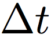
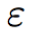

CS 184: Computer Graphics and Imaging, Spring 2019
Realistic Water Droplet Simulation
By Varsha Venkat, Jessica Yeh, and Karina Martinez
Abstract
In our project, we simulated small-scale water phenomena like falling water droplets using the Lagrangian deformable surface model defined in A Deformable Surface Model for Real-Time Water Drop Animation by Zhang et al [1]. Our mesh representation is more memory and runtime-efficient than traditional water droplet simulations, which rely on a volumetric approach to modeling motion. We used the Blender Python API to model droplet mesh changes over time, in particular vertex movement and intersection with solids.
Technical Approach
Operator 1: External Forces
The first deformation operator involves applying external forces to each water droplet. External forces are used to perform preliminary vertex positions for each vertex in the droplet mesh. To simplify our model, we only consider the force of gravity, friction, and viscosity (through a damping force) for this part.
The external forces operator can be broken into four steps: applying gravitational force, handling surface collisions, applying friction, and applying a damping force. The operator is iteratively applied to each vertex in the droplet mesh.
Step 1: Gravity
We represent gravity as a global constant (vector) in our code, and use this vector in conjunction with our timestep to update each vertex’s velocity and position vectors.
We assume that the vertex under operation has a current velocity of . If this is the first frame in the animation, defaults to the zero vector; otherwise, we understand it to be the velocity after applying all deformation operators in the previous timestep. The updated velocity at the vertex, after applying acceleration due to gravity, is then . Note that all our renders use  = 0.01 and is a vector with z-coordinate equal to -9.8 (representing that acceleration due to gravity is -9.8 m/s2).
Given that the initial vertex position is denoted by , we also update the vertex position to account for the force due to gravity using the Forward Euler method. The new position is given by , where  is defined as above.
is defined as above.
Step 2: Surface Collisions
Once we have applied the force due to gravity, we handle vertex collisions with the surface. We do not want the droplet to fall below the surface of the collision object, so we project the new vertex position to the closest point on the object’s surface. We then update the velocity at the vertex accordingly, via an inelastic update.
We check for vertex-surface collisions as we did in Project 4, by checking whether the old vertex position and new vertex position lie on opposite sides of the surface. If a collision occurs, we calculate the distance from the new vertex position (after the gravity update in step 1) to the closest surface point and shift the new vertex position by that distance, along the surface normal. Assuming that  represents the absolute distance from the new vertex position to the surface, the corrected vertex position is given by where is the position after the update in step 1 and
represents the absolute distance from the new vertex position to the surface, the corrected vertex position is given by where is the position after the update in step 1 and  is the direction vector to the closest surface point.
is the direction vector to the closest surface point.
We also want to adjust the velocity to account for the adjusted position. This is done in an inelastic fashion, using the following equation:
Here, is the original velocity prior to the gravity update in step 1 and is the surface normal at the corrected position of the vertex. is the surface velocity at the corrected vertex position, and is given by .
Step 3: Friction
We now take the collision-corrected vertex positions and apply friction forces based on the surface used. This enables us to control the amount slipping between the water droplet and solid surface.
We update the velocity at the vertex using the below formula, where  represents the friction magnitude coefficient.
We can then update the vertex position using , where is the vertex position and is the velocity at the vertex after the updates in step 2.
Step 4: Damping Force
The paper by Zhang et al also suggested using an additional method to model fluid viscosity; this is done by using a damping force to update the velocity at the vertex as follows:
We use = 0.4 and = 0.1 for our renders. controls the reduction to the magnitude of velocity at each timestep, and represents the viscosity coefficient. Recall that is the velocity after the updates in step 4.
Operator 2: Mean Curvature Flow
Operator 3: Contact Angle Operator
Now that the mean curvature flow operator allows us to create surface-tension like effects between the water and air, the next step is to produce these surface tension effects between the water drop and the surface it is in contact with. When a water drop flows onto a solid surface, its contact line will be affected by the hydrophobicity of the solid material which leads the water drop to have different shapes with regards to the hydrophobicity of the solid surface. This hydrophobicity is characterized by the stable contact angle, which is defined as the angle between the water/air surface and the solid surface when a water drop reaches equilibrium (Zhang et al, 2012).
Our contact angle operator exposes this property by explicitly finding the current contact angle between vertices in the water drop mesh and the surface it is in contact with then apply a boundary force on each contact vertex to further guide the motion of the water drop. To do so, we first identified all vertices that have collided with the solid surface of the scene and have non-collided neighboring vertices - we will refer to these vertices as contact vertices. We then explicitly calculate the contact angle of each contact vertex in order to apply a boundary force which will then affect its motion for future time steps.
To calculate the contact angle, we find the water-air surface normal at a contact vertex O by the area-weighted average of triangle normals of its three neighboring vertices A, B and C that are between water and air (i.e. non-contact vertices). We then approximate the contact angle to be the angle between and the surface normal, . Figure 2 shows a visual representation of this.
Using this calculated contact angle, we then apply a boundary force given by the following formula:
Here, and are predefined receding and advancing contact angles, is the magnitude coefficient for the boundary force, and is the projection of onto the surface. This boundary force influences the contact vertices to aim to minimize the boundary force magnitude by stabilizing on the surface and reach an equilibrium position.
Once we have the boundary force, we check the current force applied to the vertex against the . If the current force exceeds , we calculate the bounding velocity using Newton’s second law of motion, , and the fact that . We then use Forward Euler with the bounding velocity to update the vertex position, and set the new velocity to be the bounding velocity.
Operator 4: Volume Correction
Volume Correction aims to reduce artifacts caused by volume changes from previous operators. We implemented global volume correction by moving vertex positions in the direction of their normals to oppose changes in volume. The update is  ; where , is the position of the vertex after operator 3 is applied, is the change in volume, and is the total surface area. For example, when the volume to area ratio decreases as the droplet hits the surface, then all vertices move in the direction of their normals (outwards) to offset volume loss.
; where , is the position of the vertex after operator 3 is applied, is the change in volume, and is the total surface area. For example, when the volume to area ratio decreases as the droplet hits the surface, then all vertices move in the direction of their normals (outwards) to offset volume loss.
Problems
Our main challenge was learning to work with Blender and its Python API, since none of our team members were familiar with the platform, and we did not have any starter code. We relied on the Blender documentation and Stack Overflow to resolve many issues.
One of the biggest challenges we ran into was performing mean curvature flow on the droplet mesh. The reference paper by Zhang et al assumes a triangle mesh is used; however, after many days of debugging, we realized that object meshes in Blender default to using quad (square) faces. This led to our implementation yielding an inaccurate result.
We also faced many artifacts in our meshes, but after extensive debugging, we realized that changing parameters such as mass and had enormous effects on the results of our renders. The paper that we followed often times did not specify their parameter settings, so it was important for us to try a wide range and combination of values.
In addition, we had a significant pivot in our project; we originally planned on doing rain rendering, but we realized that the existing papers on rain rendering did not have very the best results. We then brainstormed and chose to pivot to small-scale water phenomena like droplet movement, which required essentially doing a project proposal and research all over again.
Lessons Learned
- Blender has a pretty big learning curve.
- Units matter with regards to how we set our parameters.
- It’s very easy to create artifacts when manipulating meshes; small errors will quickly accumulate.
- Relying heavily on one paper for implementation strategies can be limiting, especially when the paper leaves out important details.
- How to render realistic water-drops! (:
Results
DROPLETS ON THE SOLID SURFACES WITH DIFFERENT CONTACT ANGLES

Final rendering of water droplet falling on the solid surface with contact angle of 90.
References
[1] Zhang, Yizhong, et al. “A Deformable Surface Model for Real-Time Water Drop Animation.” IEEE Transactions on Visualization and Computer Graphics, vol. 18, no. 8, 2012, pp. 1281–1289., doi:10.1109/tvcg.2011.141.
Team Contributions
The work was evenly distributed across our team. There was a lot of cross-collaboration, especially when it came to debugging errors in each part. Our detailed contributions to this project are outlined below:
Jessica: Worked primarily on volume corrections and mesh optimizations, including collapsed edges (however, this did not make it into our final code) . Also worked on keyframe animations, using shape keys, external forces (gravity update), and environment rendering.
Karina: Worked primarily on the contact angle operator, and scene/environment rendering (including materials research). Also implemented Cholesky linear factorization for solving positive semidefinite system in mean curvature flow.
Varsha: Worked primarily on external forces and mean curvature flow. Also helped implement boundary forces for the contact angle operator, and set up keyframe animations in Blender.